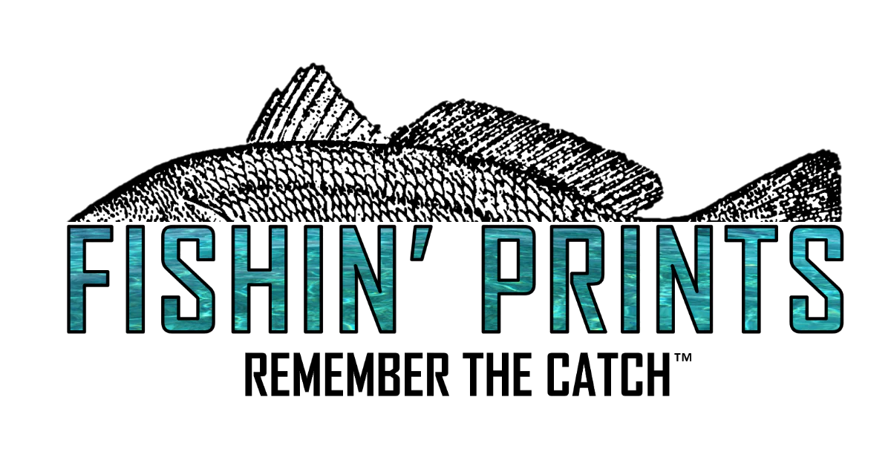
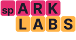

01
AI Enablement
Workshops and demos that help teams use AI in the work they already do, with examples built around their documents, customers, inboxes, code, and handoffs.
Book enablementWe help operators and founders learn where AI fits, then deploy workflow automations and agentic coding systems that work inside the tools they already use.
Partnering with teams that want to do work better


We teach the team where AI creates leverage, then deploy the systems that make that leverage show up in daily work.
Workshops and demos that help teams use AI in the work they already do, with examples built around their documents, customers, inboxes, code, and handoffs.
Book enablementCustom agents, workflow automations, and agentic coding systems designed around your tools, review paths, permissions, and operating constraints.
Book deploymentWe get close to the real workflow, tools, team habits, permissions, and review paths.
We run workshops and demos so people know how to use AI in the work they already do.
We ship agents, automations, and coding-agent systems into the existing operating stack.
We will use the intro to understand whether the next step is enablement, deployment, or a mix of both.